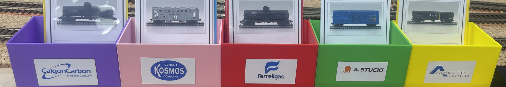

Operations

HART Railroad is an HO scale model railroad that fills one room of the owner's house. It is based on a real place: Neville Island, the industrial island in the Ohio River just below Pittsburgh, and the Pittsburgh & Ohio Valley Railway (P&OV) that switched its plants for nearly a century. Here is everything a crew member needs, from a first look at the railroad to the dispatcher's desk. New to Neville Island? Start with the four pages just below. Regulars, your paperwork is further down.
Your first session
Read these before your first night. Nothing to memorize; the crew will walk you through the rest.
Start here · HB-01
New Operator Primer
What a session is like, the island's story, the customers you'll switch, the jobs on the board, destination colors, and how the track scale works.
How-to
Car cards & waybills
What each card and waybill says, how the color bar sorts cars, and how to read them on your first night.
SM-02 to SM-06
Station maps
The system schematic, then West Yard, South Yard, Barn, East End, and Shenango, with track names and switch numbers.
Photos
Session night: the layout room
A walk through the room: the lounge, the dispatcher's desk, the yards, the scale, and the crew's paperwork.
Also worth a look: Photos, from the island's past to the cars and locomotives you'll run.
Regular crews
The paperwork you work from at the layout, and the dispatcher's tools.
At the layout tonight? Crew sheets, station maps, colors, and the Route 23 timetable. Session paperwork →Session paperwork
What's on the clipboard, built for a phone at the fascia (the front edge of the layout).
D749 · NVL · CK1
Crew sheets
Your job's steps, your colors, and where you work. Tick steps off as you go.
Reference
Destination colors
Eight colors, eight places: the island industries and the two interchanges.
Reference
Industry spot sheets
Every customer's history, tracks and spots: which car goes where, and what it carries.
EQ-01
Scale instructions
Calibrating the track scale and weighing the coke pull.
Dispatcher's desk
How-to
Dispatcher guides
The two Centralized Traffic Control (CTC) panels, the Union Switch & Signal (USS) lever machine and the CATS Digicon panel, plus JMRI auto-dispatching.
Interactive Live
Layout Explorer
The full Digicon board. Click any switch or signal mast for its control point and hardware.
At the layout
Live tools
STS, MQTT Mimic, and JMRI web. These links only work on the layout's own network.
Words & codes
Glossary
Plain-language meanings of the railroad words, job codes like D749, and paperwork numbers like YM-01.
Want a sheet on paper? The Publications shelf has every official publication with its number and revision, ready to print.
How the layout works, from the signals to the electronics under the benchwork, is in Behind the Scenes. The helix and the build photos are in The Build.